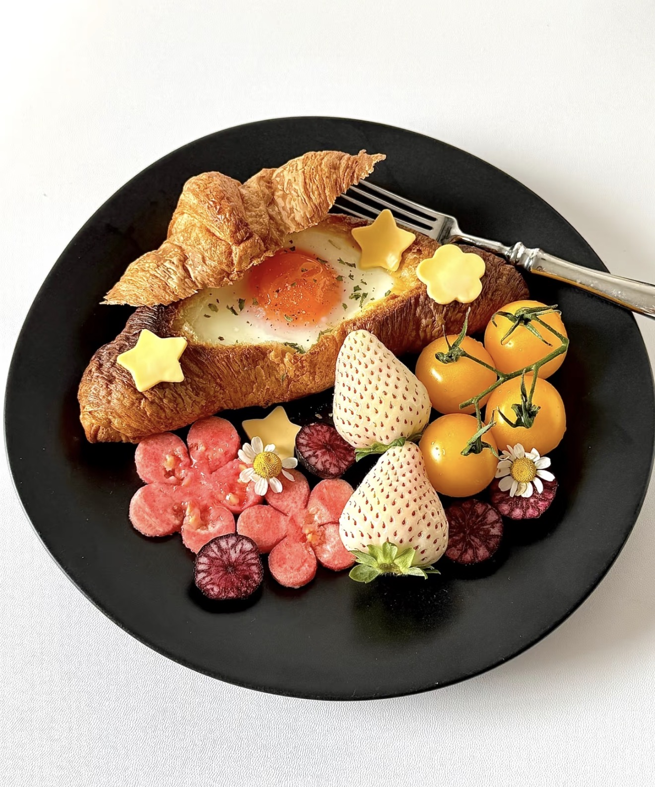
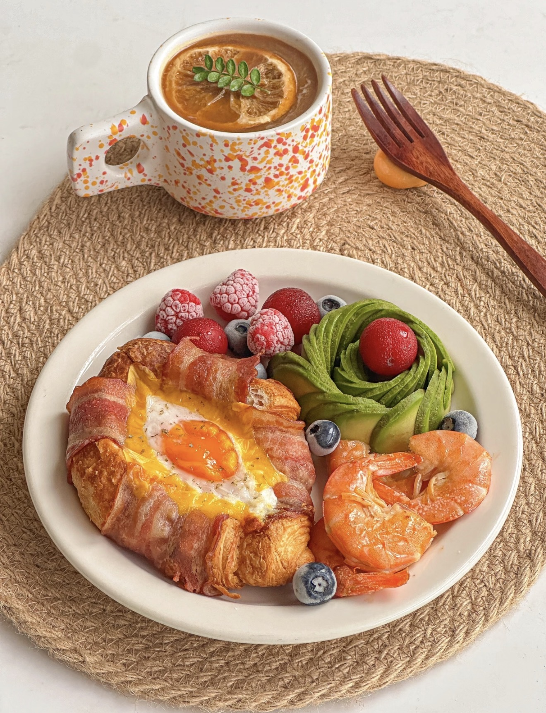

Croissant Egg Breakfast
温泉蛋可颂早餐盘 — Buttery croissant with a soft egg, paired with fresh fruits and shrimp.
Ingredients
- Croissant
- Egg
- Bacon slices
- Cheese slice
- Shrimp
- Avocado
- Blueberries
- Strawberries
- Salt & pepper
- Butter or oil
Directions
- Slice the croissant open slightly.
- Add a slice of cheese inside.
- Crack an egg into the center.
- Wrap bacon around the croissant.
- Air fry or bake at 170°C for about 8–10 minutes.
- Cook shrimp in a pan until pink.
- Slice avocado and prepare fruits.
- Plate everything nicely and serve.